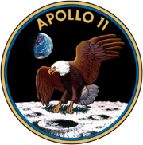

Apollo 11
Apollo 11 este numele primei misiuni în care omul a pășit pe suprafața satelitului natural al Pământului, Luna.
Este în același timp și cea de-a cincea misiune cu echipaj uman din Programul Apollo, gestionat de NASA, și a treia care plasează oameni pe orbita lunară.
Lansată pe data de 16 iulie 1969, misiunea era constituită din Neil Alden Armstrong, comandantul misiunii, Michael Collins, pilotul modulului de comandă și Edwin Eugene „Buzz” Aldrin Jr., comandantul modulului lunar.
Pe data de 21 iulie, Armstrong și Aldrin au devenit primii oameni care au pășit vreodată pe Lună, în timp ce Collins orbita deasupra lor.
Misiunea a îndeplinit visul președintelui american John F. Kennedy, acela de a trimite un om pe Lună până la sfârșitul anilor 1960, exprimat limpede într-un discurs ținut înaintea unei întruniri a Congresului Statelor Unite pe 25 mai 1961.
Echipaj
Echipaj principal
Fiecare din membrii echipajului Apollo 11 a mai avut un zbor în spațiu la activ înainte de această misiune, devenind cel de-al treilea cel mai experimentat echipaj din istoria zborurilor spațiale. Collins era inițial repartizat pe Modulul de Comandă al misiunii Apollo 8, dar a fost schimbat din cauză că a avut nevoie de o operație la spate, fiind înlocuit cu Jim Lovell. După ce Collins a fost apt din punct de vedere medical, el a ocupat locul de pe Apollo 11 care îi era menit lui Lovell, iar aceste a fost mutat în echipajul de rezervă.
- Neil A. Armstrong - Comandant
- Michael Collins - Comandantul modulului pilot
- Edwin E. Aldrin, Jr. - Pilotul modulului lunar


Echipaj de rezervă
- James A. Lovell, Jr - Comandant
- William A. Anders - Comandantul modulului de comandă
- Fred W. Haise, Jr - Pilotul modulului lunar
Echipajul de suport
- Charles Moss Duke, Jr., responsabil comunicații cu capsula (CAPCOM)
- Ronald Evans, CAPCOM
- Owen K. Garriott, CAPCOM
- Don L. Lind, CAPCOM
- Ken Mattingly, CAPCOM
- Bruce McCandless II, CAPCOM
- Harrison Schmitt, CAPCOM
- William Pogue
- Jack Swigert
Directori de zbor
- Cliff Charlesworth (Echipa verde), lasere și activități extravehiculare
- Gene Kranz (Echipa albă), aselenizare
- Glynn Lunney (Echipa neagră), ascensiune
Denumiri
|  |
|
Etapele misiunii
-
Lansarea (16 iulie 1969):
- Racheta Saturn V a fost lansată de la Centrul Spațial Kennedy din Florida.
- În primele minute de zbor, echipajul a trecut printr-o fază de separare a treptelor rachetei pentru a economisi combustibil.
-
Traversarea spațiului până la Lună:
- Echipajul a petrecut aproximativ trei zile călătorind către Lună.
- Astronauții au efectuat diverse verificări ale sistemelor și au pregătit modulul lunar pentru coborârea pe Lună.
-
Intrarea în orbita lunară (19 iulie 1969):
- Capsula a intrat într-o orbită lunară și a început manevrele pentru a se alinia cu modulul lunar.
-
Separarea modulului lunar (20 iulie 1969):
- Modulul lunar "Eagle" s-a separat de modulul de comandă, iar Armstrong și Aldrin s-au pregătit pentru coborâre.
- Collins a rămas în modulul de comandă care a rămas în orbita lunară.
-
Coborârea pe Lună (20 iulie 1969):
- Modulul lunar a coborât pe Lună, iar Armstrong și Aldrin au navigat prin problemele de alunecare și au găsit un loc sigur de aterizare în Marea Tranquillitatis.
- Armstrong a devenit primul om care a pășit pe Lună, urmat de Aldrin.
-
Activitățile pe Lună:
- Astronauții au efectuat experimente științifice, au instalat instrumente de măsurare și au colectat mostre de sol lunar.
- Au comunicat cu echipa de control de la sol și au transmis imagini și informații către Pământ.
-
Decolarea de pe Lună (21 iulie 1969):
- Modulul lunar s-a ridicat de pe suprafața lunară și a revenit în orbita lunară pentru a se reuni cu modulul de comandă.
-
Reuniunea și călătoria de întoarcere (22 iulie 1969):
- Astronauții s-au reunit cu modulul de comandă și au început călătoria de întoarcere spre Pământ.
- S-au efectuat manevre de reîntoarcere și corectare a traiectoriei pentru a asigura o intrare sigură în atmosfera Pământului.
-
Aterizarea pe Pământ (24 iulie 1969):
- Capsula a revenit în atmosfera Pământului și a aterizat în Oceanul Pacific.
- Astronauții au fost recuperați de echipajele de salvare și au fost plimbați în condiții de siguranță pe puntea unei nave de recuperare.
Concluzii
Misiunea Apollo 11 a fost o realizare istorică și un moment de referință în istoria explorării spațiale.
Desfășurată în iulie 1969, misiunea a fost prima care a adus oameni pe suprafața Lunii, marcând un triumf remarcabil al tehnologiei, științei și curajului uman.
Prin reușita acestei misiuni, echipajul compus din Neil Armstrong, Buzz Aldrin și Michael Collins a demonstrat că omenirea are capacitatea de a depăși granițele propriului său habitat și de a ajunge în locuri îndepărtate din sistemul solar.
Pasul istoric al lui Armstrong pe suprafața lunară și celebrele cuvinte, "Acesta este un pas mic pentru un om, un salt uriaș pentru omenire," rămân printre cele mai memorabile momente din istorie.
Misiunea Apollo 11 a deschis calea pentru alte misiuni Apollo și a contribuit la avansarea tehnologiilor spațiale.
Mai mult decât atât, această misiune a demonstrat puterea colaborării umane și a spiritului de explorare care persistă și astăzi în eforturile noastre de a înțelege și de a explora universul.
Misiunea Apollo 11 este și va rămâne un simbol al determinării umane de a depăși limitele și de a explora necunoscutul.